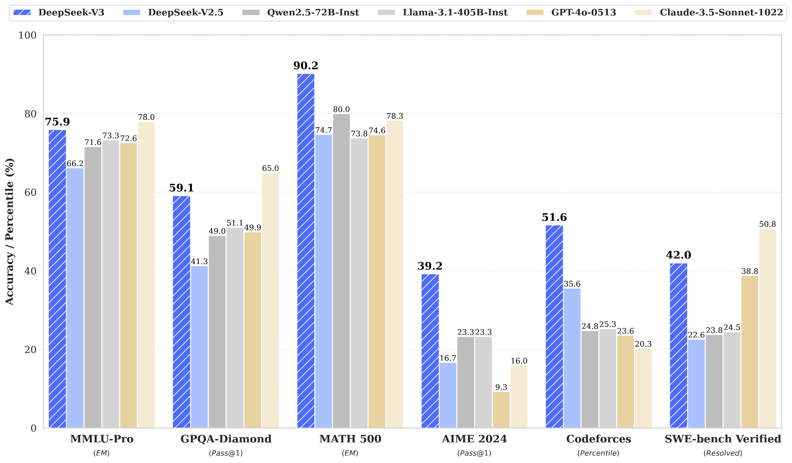
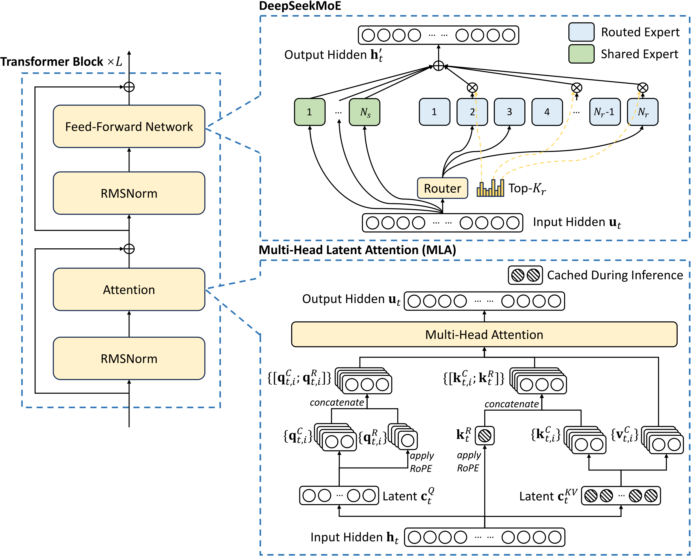
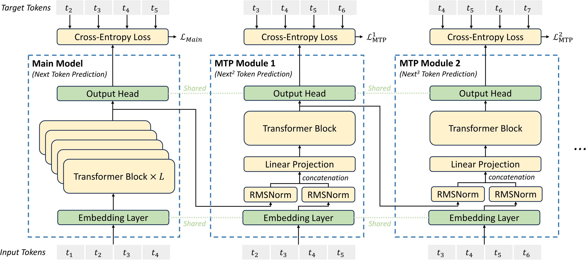
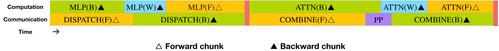
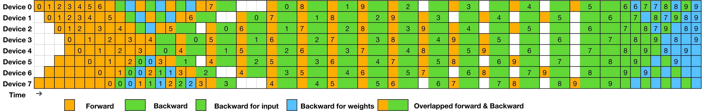
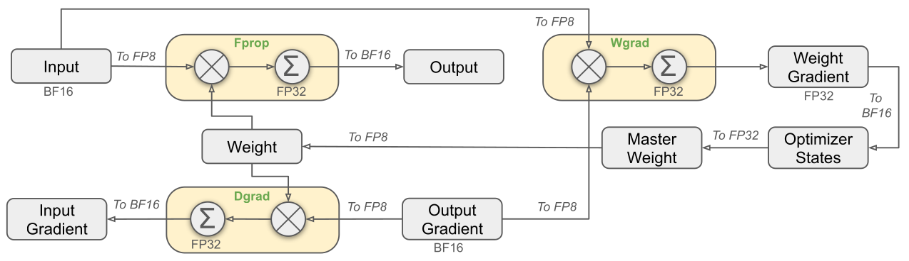
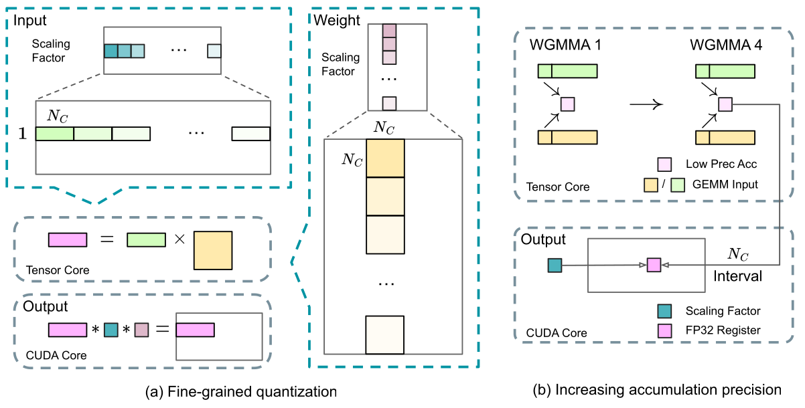
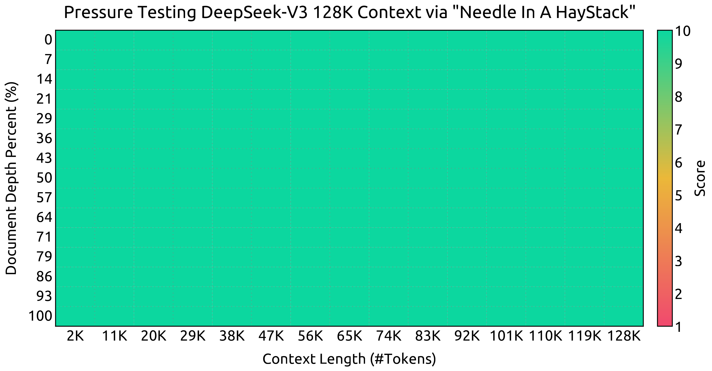
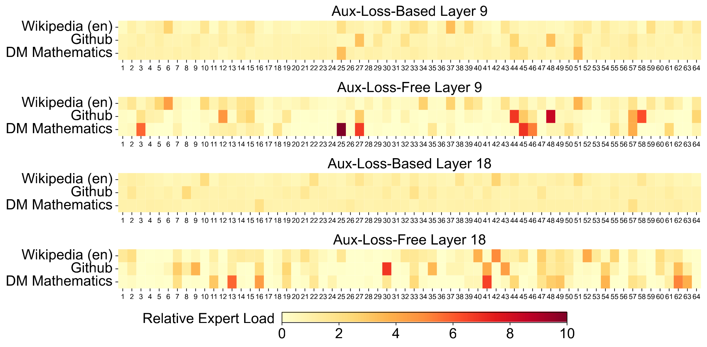

DeepSeek-V3 Technical Report
摘要 / 核心贡献
论文主张三层创新：
- 架构：MLA + DeepSeekMoE 沿用 V2，新增 auxiliary-loss-free 负载均衡 与 MTP 训练目标。
- 工程：第一次在超大规模 MoE 上验证 FP8 全栈训练；自研 DualPipe 减少 pipeline bubble 并 overlap 通信；自研 IB+NVLink 协同的 all-to-all kernel；不用 TP 即可训出 671B。
- 后训练：从 DeepSeek-R1 系列 蒸馏长 CoT 推理能力到通用 LLM，以及把 V3 自身作为 Generative Reward Model 做 self-rewarding。

1 背景与目标
2024 年开源 LLM（Llama 3.1 / Qwen2.5 / Mistral）在闭源（GPT-4o / Claude-3.5）面前仍有显著差距，差距集中在 知识广度、代码工程、复杂推理。要把开源模型推到接近前沿，作者识别出三件事必须同时做对：(a) 架构本身要可缩放（MoE）且推理便宜（KV cache 小）；(b) 训练效率必须够高，否则 14.8T × 671B 的成本不可承受；(c) 后训练阶段需要把 R1 风格的"长 CoT 推理"经验合理迁移到通用模型而不让响应失控变长。
2 模型架构

2.1 Multi-head Latent Attention (MLA)
MLA 的核心是 对 KV 与 Q 都做低秩压缩，再附带一个独立的 RoPE 路径。KV 侧公式如下（query 对称）：
每项含义：$\mathbf c_t^{KV}\in\mathbb R^{d_c}$ 是 KV 共用的 低秩 latent（$d_c\ll d_h n_h$）；$W^{UK}, W^{UV}$ 把 latent up-project 回多头 KV；$\mathbf k_t^R$ 是一组 专门承载 RoPE 的 decoupled key（不参与压缩）。推理时只需缓存 $\mathbf c_t^{KV}$ 与 $\mathbf k_t^R$，因此 KV cache 远小于普通 MHA，长上下文 decoding 受益最大。Attention 输出按 $\sqrt{d_h+d_h^R}$ 归一：
2.2 DeepSeekMoE + Auxiliary-Loss-Free 负载均衡
DeepSeekMoE 的特色是 更细粒度专家 + 共享专家隔离。每个 token 的 FFN 输出：
$N_s=1$ 共享专家始终激活，$N_r=256$ routed experts 取 Top-$K_r=8$。亲和度用 sigmoid（V2 是 softmax）+ 选中后归一化得到门控权重。
关键创新 — Auxiliary-Loss-Free. 传统做法（Switch / GShard）用一个负载均衡辅助损失 $\mathcal L_{aux}$ 推动 router 均匀路由，但太强会拉低主任务质量。V3 改用一个 路由偏置项：
注意 $b_i$ 只参与路由决策、不参与门控值计算。每个 step 末根据当前 batch 的专家负载，对过载专家把 $b_i$ 减 $\gamma$，欠载专家加 $\gamma$（$\gamma$ = bias update speed，前 14.3T tokens 用 0.001，最后 500B tokens 设为 0）。这样在不引入梯度噪声的前提下用 纯反馈控制 维持均衡。论文还配了一个 $\alpha$ 极小的 sequence-wise 辅助损失只防极端不均衡。
Node-Limited Routing. 每个 token 至多送往 $M=4$ 个 node，节点选择基于该节点上专家亲和度之和。这是后面 all-to-all overlap 能成立的前提。No Token Drop. 整个训练 + 推理过程不丢 token，靠负载均衡 + 推理阶段的 redundant expert 部署来保证。
2.3 Multi-Token Prediction (MTP)

MTP 的训练目标：
整体损失 $\mathcal L_{MTP}=\frac{\lambda}{D}\sum_k \mathcal L^k_{MTP}$ 作为辅助目标加在主 LM loss 上。推理时直接丢掉 MTP module，主模型独立工作；如果想加速，可把 MTP module 复用为 speculative decoding 的草稿模型——论文实测第 2 个 token 的接受率 85–90%，给出 1.8× 端到端 TPS 提升。
3 训练基础设施：算法-框架-硬件协同设计
3.1 DualPipe：把通信完全 overlap 进计算
跨节点专家并行让 communication / computation ratio 接近 1:1，是大 MoE 训练的最大瓶颈。DualPipe 把每个 chunk 拆成 4 份：attention / all-to-all dispatch / MLP / all-to-all combine；backward chunk 进一步拆 backward-for-input 与 backward-for-weights（借鉴 ZeroBubble），再加一个 PP communication 单元。


| 方法 | Bubble | 参数 | Activation |
|---|---|---|---|
| 1F1B | $(PP-1)(F+B)$ | $1\times$ | $PP$ |
| ZB1P | $(PP-1)(F+B-2W)$ | $1\times$ | $PP$ |
| DualPipe | $(\frac{PP}{2}-1)(F\&B+B-3W)$ | $2\times$ | $PP+1$ |
3.2 跨节点 All-to-All：IB+NVLink 拓扑感知 kernel
集群内 NVLink 带宽 160 GB/s ≈ IB 50 GB/s 的 3.2×。论文据此设计：每 token 限 4 节点，且 dispatch 走 "先 IB 同 in-node-index → 再 NVLink 同节点内转发到目标专家"，使 IB 流量与 NVLink 转发在硬件上自然 overlap。理论上 token 可 attend 到 4 节点 × 3.2 专家/节点 = 13 个专家而通信成本不变（实际 $K_r=8$）。
实现细节：用 warp specialization 把 20 个 SM 切成 10 个通信通道，分别处理 IB-send / IB→NVLink forward / NVLink-receive 等子任务，warp 数动态调整。dispatch+combine 与计算 stream overlap，PTX 自定义指令 + auto-tune chunk size 减少 L2 cache 干扰。最终 仅 20/132 SM 即可吃满 IB+NVLink 带宽。
3.3 FP8 训练：在 671B 上首次跑通


其他 FP8 关键决策：
- 统一 E4M3（4 bit exponent + 3 bit mantissa）：和主流 hybrid（Fprop E4M3 / Dgrad+Wgrad E5M2）不同，全用 E4M3。代价是动态范围更小，但被 fine-grained tile/block 量化弥补。
- Online quantization：每个 1×128 tile / 128×128 block 实时算 absmax，不用 delayed quantization 维护历史 max；简化框架且更稳。
- 低精度通信与存储：MoE up-projection 之前的 dispatch 激活转 FP8（scaling 限为 2 的整数次幂）；attention 之后的 Linear 输入用自定义 E5M6 格式（精度敏感）；优化器一/二阶矩 BF16，master weight 与 grad 仍 FP32。
验证：在 V2-Lite / V2 规模上各训 1T token，FP8 vs BF16 相对 loss 差异 < 0.25%，远低于训练随机性。
3.4 推理部署：prefilling / decoding 分离
| 阶段 | 最小部署单元 | Attention 并行 | MoE 并行 | 冗余专家数 |
|---|---|---|---|---|
| Prefilling | 4 nodes / 32 GPUs | TP4 + SP + DP8 | EP32 | 32（每 GPU 多托管 1 个） |
| Decoding | 40 nodes / 320 GPUs | TP4 + SP + DP80 | EP320（每 GPU 1 个专家） | 用 64 GPU 专门托管 |
Decoding 阶段把 shared expert 视作一个"必选 routed expert"，每个 token 实际选 9 个；点对点 IB + IBGDA 直连降延迟；两个 micro-batch 同时 in-flight 让 attention 与 dispatch+MoE+combine 互相 overlap。每 10 分钟根据线上负载统计调整 redundant expert 集合。
4 预训练
4.1 数据
语料 14.8T token，相比 V2 提高数学/代码占比、扩多语言。document packing + 不做 cross-sample attention mask；Fill-in-Middle (PSM 框架，触发率 0.1)。Tokenizer 用 byte-level BPE，词表 128K；引入合并标点+换行的 token，但同时 训练时随机拆分这些组合 token，避免 few-shot prompt 缺末尾换行时的 boundary bias。
4.2 超参与扩展
| 项 | 值 |
|---|---|
| 层数 / hidden | 61 / 7168 |
| MLA: $n_h$ / $d_h$ / $d_c$ / $d'_c$ / $d_h^R$ | 128 / 128 / 512 / 1536 / 64 |
| MoE: $N_s$ / $N_r$ / $K_r$ | 1 / 256 / 8（前 3 层仍是 dense FFN） |
| 每专家 hidden | 2048 |
| MTP 深度 $D$ | 1（即额外预测下 1 个 token） |
| Optimizer / 序列长度 | AdamW($\beta_1$=0.9, $\beta_2$=0.95, wd=0.1) / 4K |
| 学习率 | 线性 → 2.2e-4 → 2.2e-5（cosine, 4.3T tokens）→ 7.3e-6 末尾 167B tokens |
| Batch size | 3072 → 15360（前 469B token 内逐步增大） |
| 并行度 | PP16 / EP64（跨 8 节点）/ ZeRO-1 DP，不用 TP |
4.3 长上下文：两阶段 YaRN 到 128K
预训练后用 YaRN 做两段扩展：4K → 32K（1000 步，BS 1920）→ 128K（1000 步，BS 480），LR 都用 7.3e-6（与预训练末尾对齐）。YaRN 仅作用于 decoupled key $\mathbf k_t^R$，参数 $s$=40, $\alpha$=1, $\beta$=32, $\sqrt t=0.1\ln s+1$。

4.4 消融：MTP 与无辅助损失策略各值多少
MTP 消融（Table 4）.在 15.7B（1.33T tokens）与 228.7B（540B tokens）两个规模上对比 baseline vs +MTP；推理时丢掉 MTP module，所以推理成本完全相同。
| Benchmark | Small Baseline | Small +MTP | Large Baseline | Large +MTP |
|---|---|---|---|---|
| BBH (3-shot) | 39.0 | 41.4 | 70.0 | 70.7 |
| MMLU (5-shot) | 50.0 | 53.3 | 67.5 | 66.6 |
| HumanEval | 20.7 | 26.8 | 44.5 | 53.7 |
| GSM8K (8-shot) | 25.4 | 31.4 | 72.3 | 74.0 |
| MATH (4-shot) | 10.7 | 12.6 | 38.6 | 39.8 |
结论：MTP 在大多数基准上稳定加分，HumanEval 上甚至 +6 ~ +9 分，且推理成本零增加。
Aux-loss-free 消融（Table 5）. 同样两个规模，对比"纯辅助损失" vs "无辅助损失 + bias 控制"。无辅助损失版在 BBH、TriviaQA、HumanEval、GSM8K、MATH 上都更高，几乎没有 benchmark 反而下降——验证 aux loss 真的在拖性能。

5 后训练
5.1 SFT：从 R1 蒸馏推理 + 控制长度
SFT 数据共 1.5M instances，分两类生成方式：
- Reasoning（数学/代码/逻辑）. 先在领域上训一个 SFT+RL 的 expert 模型作 data generator。每条样本生成两份：
<problem, original response>与<system prompt, problem, R1 response>；R1 风格 system prompt 强制反思+验证。RL 阶段用高温采样让模型学会同时使用两种风格；最终用 rejection sampling 在 expert 上挑高质量样本作 V3 的 SFT data。核心 trick：避免模型继承 R1 的"过度思考、格式乱、回答太长"。 - Non-reasoning（创作/角色扮演/简单问答）. 用 V2.5 生成响应 + 人工校验。
SFT 配置：cosine LR 5e-6 → 1e-6，2 个 epoch，序列内多样本拼接但用 sample mask 隔离可见性。
5.2 RL：双 RM + GRPO
Reward Model. 数学有确定答案（"\boxed{}"格式 + 规则验证），LeetCode 有编译器 + test case → 用 rule-based RM，抗 reward hacking。开放问题用 model-based RM，从 V3 SFT checkpoint 训出，且其 preference data 包含 chain-of-thought 推理到 reward，进一步降低 hacking 风险。
GRPO. 抛弃 critic，从一组 sample 的均值估计 baseline：
$r_i=\pi_\theta(o_i|q)/\pi_{old}(o_i|q)$，$A_i$ 是组内归一化优势。融合 reasoning + 偏好 + helpfulness 多 reward 一阶段 RL。
5.3 Chat 模式主要结果（Table 6 节选）
| 类别 | Benchmark | Qwen2.5-72B | Llama-3.1-405B | GPT-4o-0513 | Claude-3.5-Sonnet | DeepSeek-V3 |
|---|---|---|---|---|---|---|
| English | MMLU | 85.3 | 88.6 | 87.2 | 88.3 | 88.5 |
| MMLU-Pro | 71.6 | 73.3 | 72.6 | 78.0 | 75.9 | |
| GPQA-Diamond | 49.0 | 51.1 | 49.9 | 65.0 | 59.1 | |
| Code | LiveCodeBench (CoT) | 31.1 | 28.4 | 33.4 | 36.3 | 40.5 |
| Codeforces (%) | 24.8 | 25.3 | 23.6 | 20.3 | 51.6 | |
| SWE Verified | 23.8 | 24.5 | 38.8 | 50.8 | 42.0 | |
| Math | AIME 2024 | 23.3 | 23.3 | 9.3 | 16.0 | 39.2 |
| MATH-500 | 80.0 | 73.8 | 74.6 | 78.3 | 90.2 | |
| CNMO 2024 | 15.9 | 6.8 | 10.8 | 13.1 | 43.2 | |
| Chinese | C-SimpleQA | 48.4 | 50.4 | 59.3 | 51.3 | 64.8 |
（超 Claude 78.3）
（超 Qwen2.5 +16）
（首个 >85% 开源）
（LC 胜率）
开放式评估. Arena-Hard 85.5（首个开源 >85），AlpacaEval 2.0 LC 胜率 70.0（远超 GPT-4o 51.1 与 Claude-3.5 52.0）。RewardBench. V3 单跑 87.0 平均分≈ Claude-3.5-1022 (88.7)；maj@6 投票后 89.6 反超之，作为 generative RM 已可用。
6 深度分析
- "控制 + 反馈"替代"附加损失"是 MoE 路由的更优范式. Auxiliary loss 是把均衡需求显式塞进梯度，不可避免与 LM loss 抢方向。Bias-based 控制只动路由决策、不动反向传播，因此能在维持均衡的同时让专家保留 batch-wise 自由度。Figure 9 是直接证据——专家分化得以保留。
- MTP 的红利是"零推理成本的训练信号密集化". $D=1$ 即只多预测 1 个 token，训练 loss 也只占 $\lambda$=0.1–0.3 的权重，但 HumanEval、AIME 等指标普遍 +2 ~ +9。同一 module 又可在推理时复用作 speculative draft，收两次。
- FP8 全栈不是"激进省 memory"，而是把 MoE 的通信瓶颈一并打掉. 因为 dispatch 激活也走 FP8，跨节点 all-to-all 流量直接减半，跟 DualPipe overlap 叠在一起才能把 communication 完全隐藏。这三件事必须协同设计才不脱节。
- R1 蒸馏 → V3 是"经验迁移"而非"模型蒸馏". V3 只吸收 R1 的 reflection / verification 模式，不直接对齐 R1 的输出长度，所以 V3 推理风格短促，但 MATH-500 反而比 Claude-3.5 高 12 分。Table 9 对比 V2.5 +R1 蒸馏后 MATH-500 平均长度从 769 → 1510，说明蒸馏对长度有放大风险——必须配 length penalty / 拒绝采样治理。
- $5.576M USD 这个数字的语义. 仅指 V3 正式训练的 GPU 时间费用；不含前期消融、不含 R1 训练、不含数据清洗与人力。但同样口径下 Llama-3.1-405B 因为是 dense + FP16，至少多个数量级。它真正的意义是证明 MoE + FP8 + 通信优化 的协同收益在 671B 量级仍成立。
7 局限性与展望（论文自陈）
- 部署单元偏大：decoding 至少 320 GPU，对小团队不友好。期望未来硬件（更大 NVLink domain、IB/NVLink 统一接口、Tensor Core 原生支持 group scaling 与 online quantization）能压缩这个最小单元。
- 生成速度仍只比 V2 快 ~2×，仍有空间——主要受限于 H800 NVLink/IB 的不对称带宽与 SM 用作通信的浪费。
- SimpleQA 等英文事实性仍弱于 GPT-4o / Claude-3.5，主要是因为训练 token 分配上多投了中文。
- 评估方法论：作者提醒未来要避免对 fixed benchmark 集 over-fit，引入更多维度的评测。
8 核心总结
- 架构新意：在 MLA + DeepSeekMoE 的稳健地基上，引入 Bias-based Auxiliary-Loss-Free 负载均衡（用反馈控制取代辅助损失，专家分化得以保留）和 顺序因果链 MTP（训练信号密集化 + 推理 1.8× speculative decoding）。
- 系统创新：DualPipe 把跨节点 all-to-all 完全 overlap 进计算；IB + NVLink 协同 kernel 仅 20/132 SM 即可吃满双链路；FP8 全栈（tile/block 量化 + CUDA-Core promote + online quant + E4M3 统一）首次在 671B MoE 上跑通，loss 误差 < 0.25%。
- 训练经济性：14.8T tokens × 671B 总参数仅 2.788M H800 GPU 小时（≈ 5.576M USD），全程零回滚；每 1T token 只要 180K GPU 小时。
- 能力对齐：从 R1 蒸馏长 CoT 推理给通用 V3，避免响应过长；MATH-500=90.2、AIME 2024=39.2 大幅超越同代闭源；Arena-Hard 85.5 是首个突破 85 的开源模型。
- 共识贡献：作者把硬件诉求（FP8 高精度累加、tile-wise quant、IB/NVLink 统一抽象）专门写成一节给 GPU 厂商——后来 Blackwell 的 microscaling 即是回应。
9 资源链接
- arXiv: 2412.19437 · PDF: arxiv.org/pdf/2412.19437
- 模型权重 / 推理代码: github.com/deepseek-ai/DeepSeek-V3
- HuggingFace: deepseek-ai/DeepSeek-V3
- 关键前作：DeepSeek-V2 / MLA (2405.04434)、DeepSeekMoE (2401.06066)、Aux-Loss-Free 路由 (Wang et al., 2024)、DeepSeek-R1 (2501.12948)
- 相关 benchmark：MMLU-Pro · GPQA · MATH-500 · AIME · LiveCodeBench · SWE-Verified · Arena-Hard · AlpacaEval 2.0